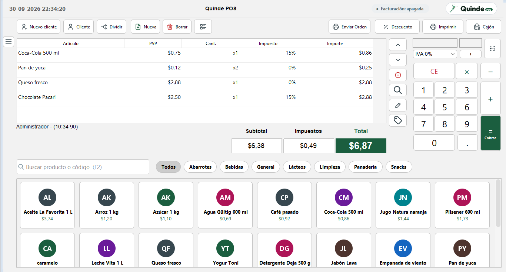
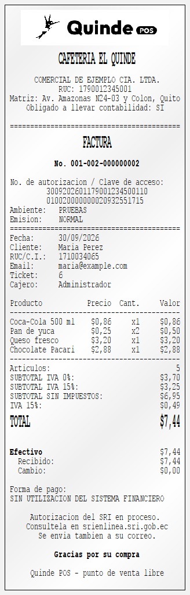
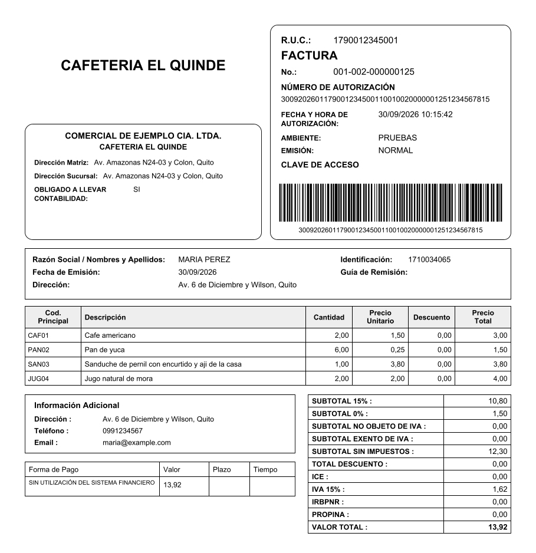
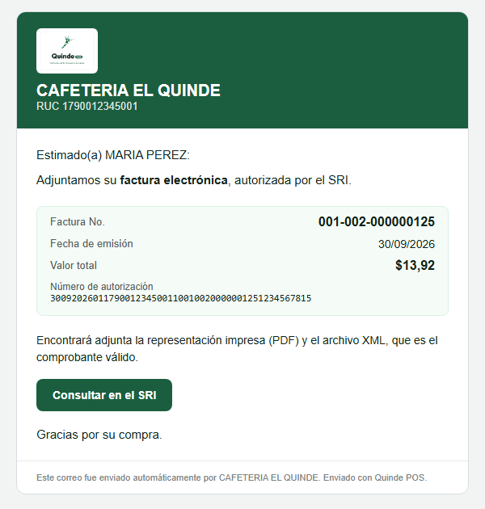
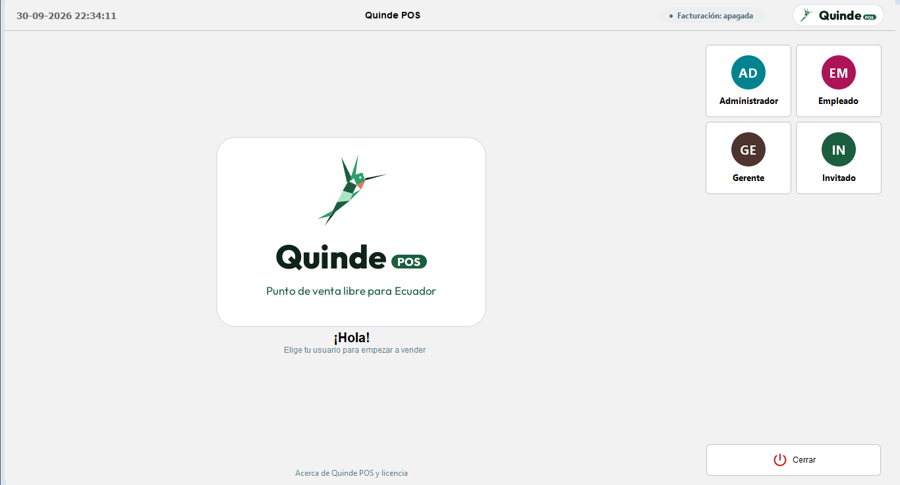
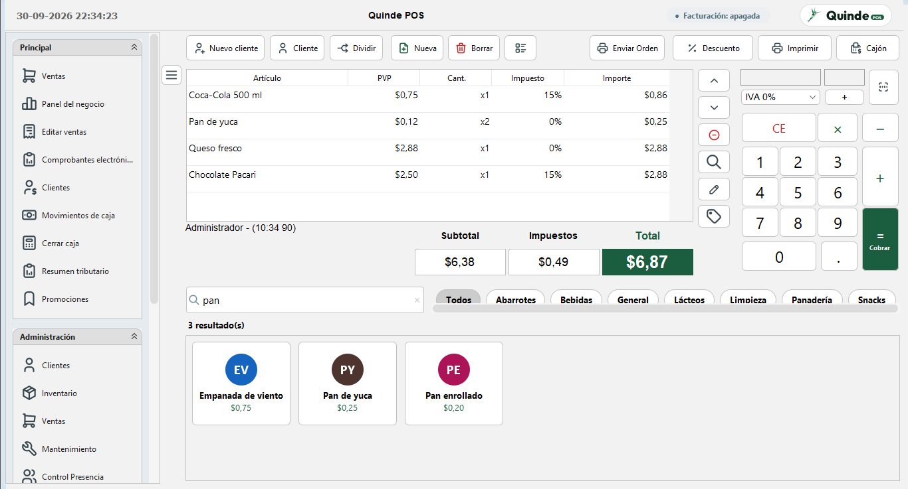
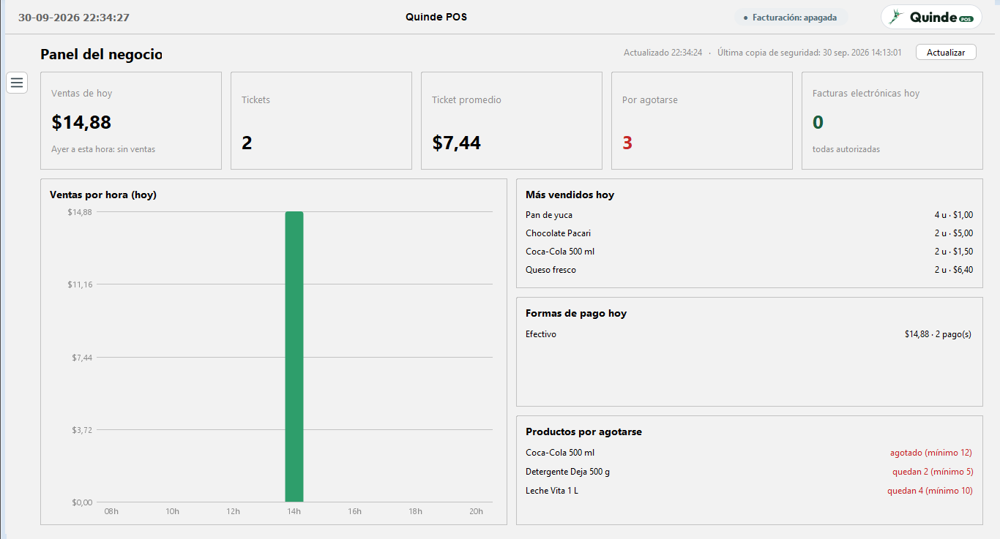
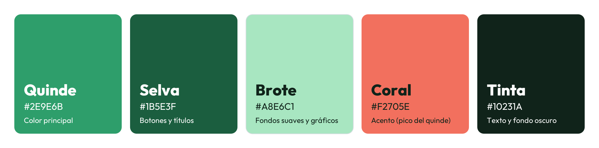

Venta rápida y táctil
Busca por nombre o código de barras, toca las tarjetas de producto y cobra con F12. Categorías, fotos y cantidades en un toque.
Vende rápido, cuadra tu caja y emite la factura electrónica del SRI sin pagar licencias ni programas aparte. Quinde POS funciona en tu computadora, con o sin pantalla táctil.
Código abierto con licencia GPL v3 · Windows, Linux y macOS

Desde la primera venta del día hasta el cierre de caja y la declaración del IVA.
Busca por nombre o código de barras, toca las tarjetas de producto y cobra con F12. Categorías, fotos y cantidades en un toque.
Billetes y monedas rápidos, botón Exacto, cambio en grande, pago dividido, tarjeta, transferencia y DeUna.
Factura y nota de crédito firmadas y autorizadas por el SRI, con el PDF enviado por correo al cliente.
Ventas de hoy contra ayer, ticket promedio, ventas por hora, lo más vendido y productos por agotarse.
2x1, 3x2, descuentos por producto o categoría y happy hour, aplicados solos al vender.
Cierre de caja con arqueo a ciegas, clave de supervisor para anular o descontar y registro de cada autorización.
Stock por almacén con alertas, historial de cada cliente, cuentas por cobrar y abonos.
Tickets térmicos, comanda de cocina, cajón de dinero, lector de códigos y visor de cliente.
Administrador, gerente, cajero e invitado, cada uno con sus permisos. Copia de seguridad automática diaria.
No necesitas otro programa ni pagar por comprobante: Quinde POS firma, envía y consulta la autorización por ti.



Tema claro y oscuro, íconos nítidos en cualquier pantalla y todo en español.



Las capturas usan un negocio y clientes de ejemplo.
Tiendas de barrio, cafeterías y restaurantes que quieren vender ordenado y facturar sin complicaciones.
Instálalo en tu computadora en unos minutos.
Gratis desde Adoptium Temurin.
MariaDB o MySQL; lo más fácil es XAMPP.
Desde GitHub y ábrelo con start.bat.
Con tu firma electrónica (.p12), siguiendo la guía paso a paso.
# Para quien quiera compilarlo desde el código
git clone https://github.com/RiccijandroUpec/EcoPos.git
cd EcoPos
ant -f build_working.xml todo # Quinde POS + facturación electrónica
start.bat # en Linux o macOS: ./start.shJava y Swing con un tema moderno, una base de datos MySQL/MariaDB y un módulo de facturación construido sobre los XSD oficiales del SRI, con pruebas automáticas.
Quinde es el colibrí en el Ecuador: pequeño, rápido y de aquí. La paleta "Selva" y la tipografía Outfit son parte del proyecto.

Quinde POS es software libre con licencia GPL v3: puedes usarlo, estudiarlo, modificarlo y compartirlo sin pagar nada.
Las ideas, reportes de errores y aportes de código son bienvenidos desde cualquier parte del Ecuador y del mundo.